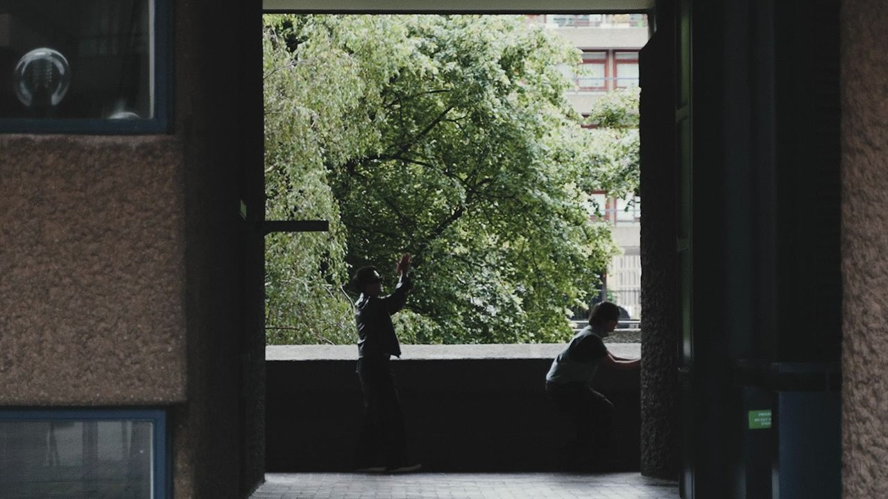
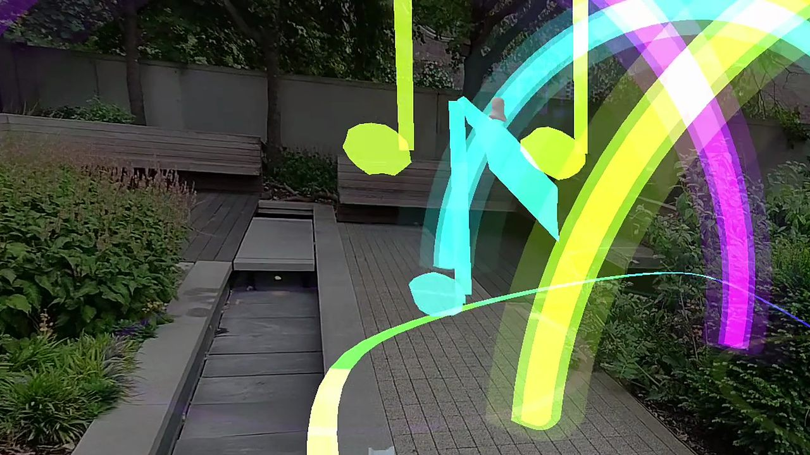
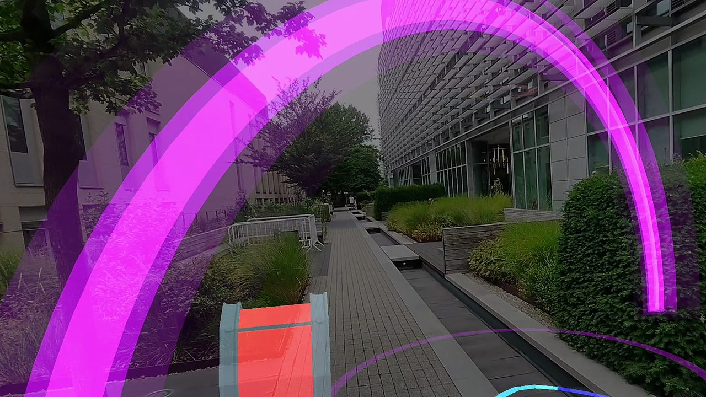
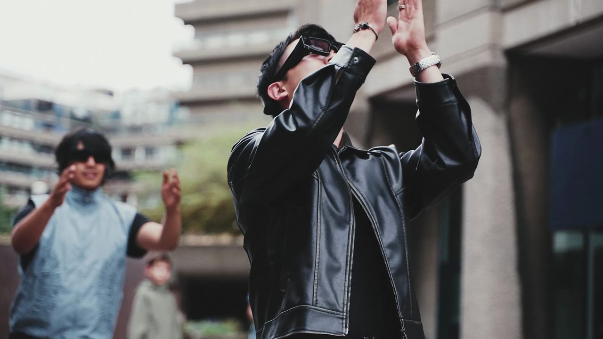
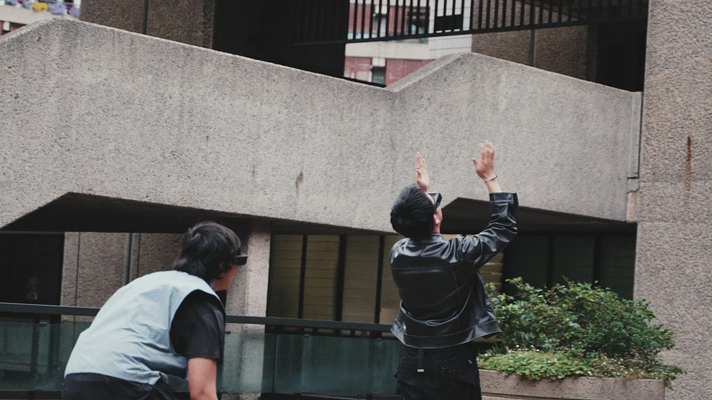
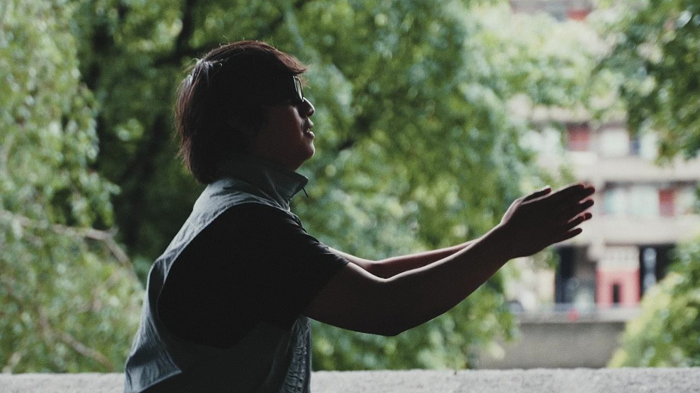
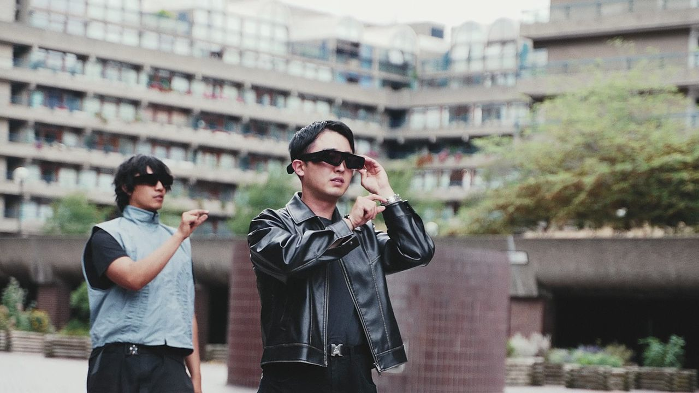
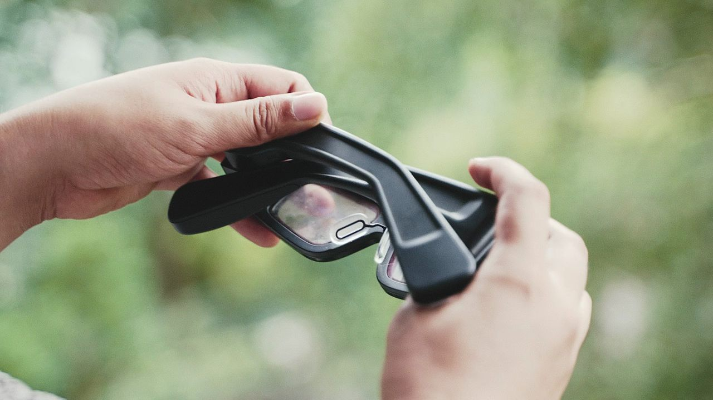

A song you write together, step by step.

Marching Band is a lens for Snap Spectacles. Put it on and a road of glowing arches lays out across the room. Each arch holds the next phrase of a song. Walk through them and the song keeps playing. Stop, and it fades.
There is no screen to stare at and no buttons to press. Your footsteps keep the beat, your claps are the drums, and opening your hands wide makes the band swell. Up to three people can share one road and one song.
A single arch waits about three metres ahead. Walk into it and a four-beat count-in lays out the road.
Each arch plays the next phrase. They stand three metres apart. Stop walking and the song fades within seven seconds.
Every clap is a drum hit. Land it on the beat and it cracks louder.
Spread your hands wide as you walk and a chord swells under the melody.
When the song ends, the arches gather into a finale and the lens plays back the tune you just carried. Then the next song begins.
The beat follows your stride, from 0.8× to 1.3× the song’s tempo, so the kick drum lands on your feet.







Swipe for more →
Marching Band is a Connected Lens. Up to three headsets join one session and walk the same road. Whoever reaches an arch moves the song on for everyone, and the band’s drum, guitar and trumpet appear on your partners.
Playing alone, a partner walks your path a couple of metres behind you, carrying the instruments.